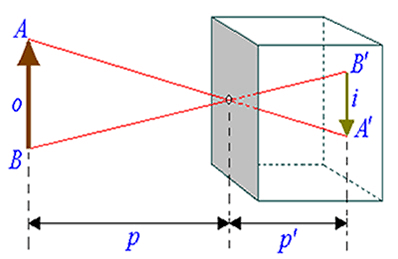
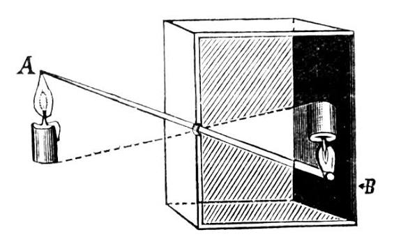

Laboratório Virtual Interativo
Arraste os controles para ver como a distância e o tamanho do objeto alteram a imagem projetada!
Cálculo em Tempo Real:
$$\frac{i}{o} = \frac{p'}{p} \implies i = o \cdot \frac{p'}{p}$$
Tamanho da Imagem Projetada ($i$): 0 px (Invertida)
Como Funciona a Física por Trás?

1. Geometria dos Raios de Luz
Como a luz se propaga estritamente em **linha reta**, os raios vindos do topo do objeto ($A$) só conseguem passar pelo orifício e atingir a base inferior do fundo da câmara ($A'$). Da mesma forma, a base ($B$) é projetada no topo ($B'$).

2. Projeção Invertida
O resultado físico é uma imagem **real, menor (geralmente) e invertida**. Esse é o mesmo princípio de funcionamento do olho humano (antes do cérebro desinverter a imagem) e das câmeras fotográficas modernas.